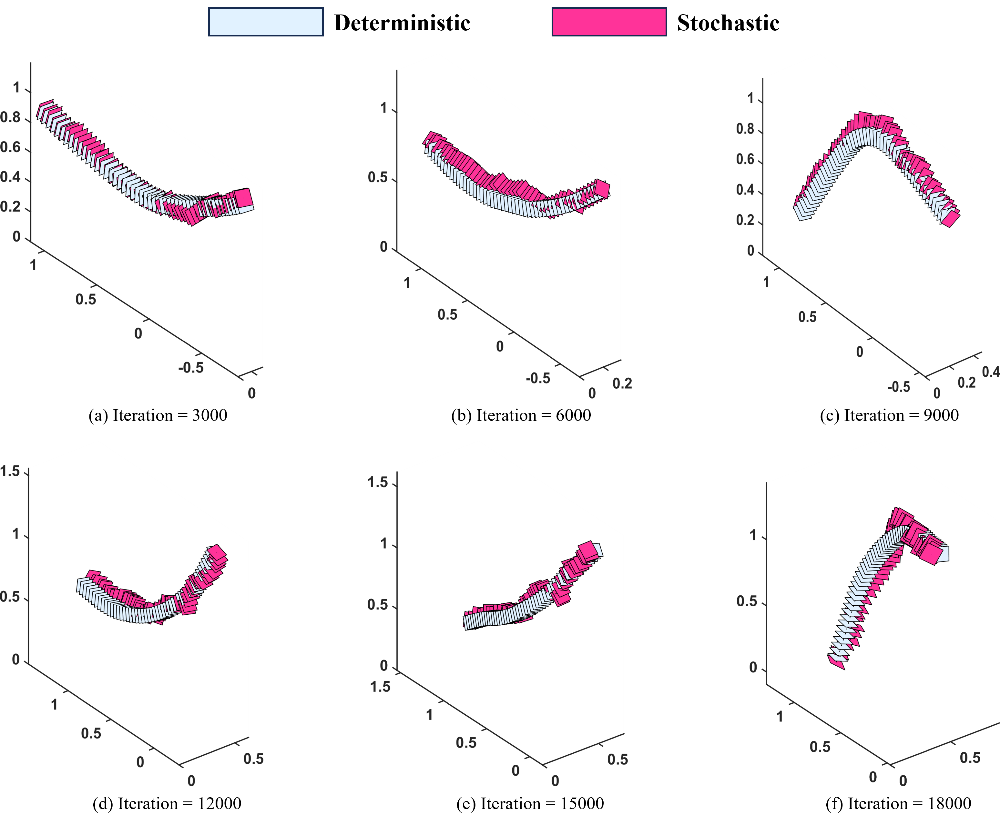
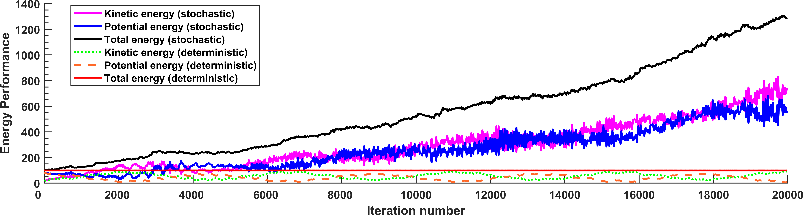
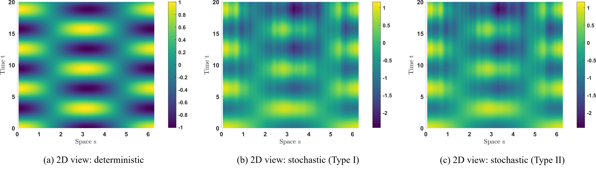

Variational Principles for Stochastic Geometrically Exact Beam
Paper (in preparation)
Video

Abstract
In this paper, we introduce stochastic variational principles for the dynamics of the stochastic geometrically exact beam, which is a stochastic analogue of the deterministic beam. By introducing stochastic perturbations in two variational ways, we derive the stochastic equations of motion in both the continuous and discrete-time formulations in the framework of Hamel's formalism. The resulting two stochastic numerical integrators simultaneously discretize time and space in a parallel manner, which provides a distributed computational approach for solving the stochastic dynamics of the beam system. In particular, the proposed integrators are shown to be stochastic extensions of the deterministic staggered leapfrog scheme for the stochastic fields that depend on a single spatial variable, and also stochastic extensions of the well-known Yee's scheme for spatially one-dimensional computational electromagnetism. Numerical results are shown to demonstrate the effectiveness of the proposed approach.
Geometrically Exact Beam

Numerical Results: Stochastic Geometrically Exact Beam

Energy performances
Numerical Results: Stochastic Wave Equation
Deterministic wave equation
Stochastic wave equation (Integrator Type I)
Stochastic wave equation (Integrator Type II)
Deterministic wave equation
Stochastic wave equation (Integrator Type I)
Stochastic wave equation (Integrator Type II)

BibTeX
@article{DLS_26,
title={Variational Principles for Stochastic Geometrically Exact Beam: Continuous-Time Formulations and Variational Integrators},
author={Ming-Hang, Du and Tian-Zhi, Li and Dong-Hua, Shi},
journal={submitted},
year={2026},
url={https://tianzhi-li.github.io/Stochastic-Beam/}
}